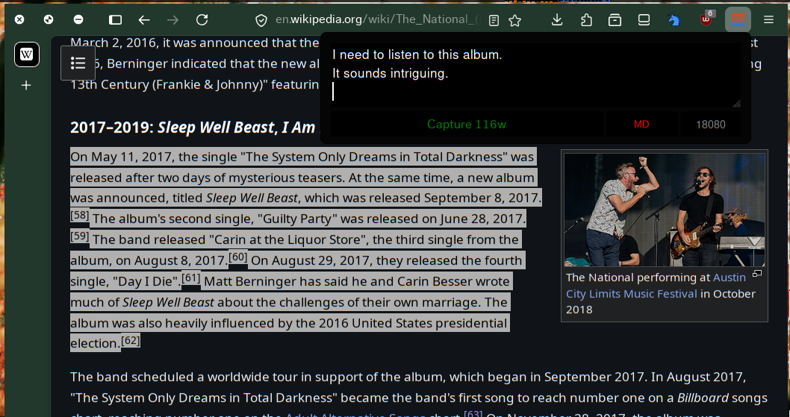

This is a Web Extension (for Firefox / Chrome / Chromium) that extracts the current page title, url and highlighted text and sends it to a local server. This allows the you to "capture" the content you highlight in a local file.
Ideal for note-taking and saving highlights to a personal file / exobrain.

This extension has not yet been published to the Firefox Addons Store or the Chrome Web Store. To use it, you need to follow these instructions:
For Firefox: Use Nightly. Toggle xpinstall.signatures.required in about:config. Load manifest.json via about:debugging.
For Chrome/Chromium/Brave: Open chrome://extensions/ and enable "Developer Mode". Click on the "Load unpacked" button and select the manifest.json file.
Keybinds can be customized.
Alt+Shift+A Quick Capture
Alt+Shift+Z Capture with Context
The extension POSTs the following JSON to (selected port)/api/capture, which the user should write a server against:
{
"source_url": "string",
"page_title": "string",
"selection_text": "string",
"selection_html": "string",
"context": "string",
"markdown": boolean,
"timestamp": "ISO8601"
}
For ease of use, a simple server written in golang is included. This server takes three arguments:
-o File to output to.
-p Port to listen on.
-f Output Format.
In lieu of complicated parsing, we use the syntax that os.Expand understands. Expand replaces ${var} or $var in the string based on the mapping function. For example, os.ExpandEnv(s) is equivalent to os.Expand(s, os.Getenv).
This extension collects zero data. It sends data to a local server of your choosing, only when you want it to. It can only access localhost and 127.0.0.1.
Permissions required: activeTab, scripting and storage.